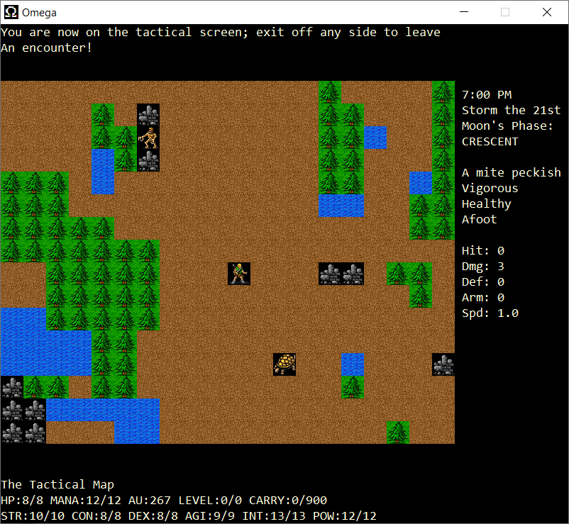

Omega is interesting as it was one of the first such games to show the influence of more story and quest led games, particularly the Ultima series that were released commercially by Origin Systems for various micros during the 1980s. Rather than simply wandering round a dungeon, in Omega the player has various paths open to them to appease the gods of Omega's world.
I've taken Omega 0.80.2 and built it as a "proper" Windows application (rather than the console mode builds that have been available before). This version can also optionally show the area around the player using graphics, rather than the usual ASCII characters. The graphics come from David Gervais' tiles, drawn originally for the game Angband.
An executable and source code can be downloaded from Omega's GitHub release page. Here is a screenshot of the game being played:
